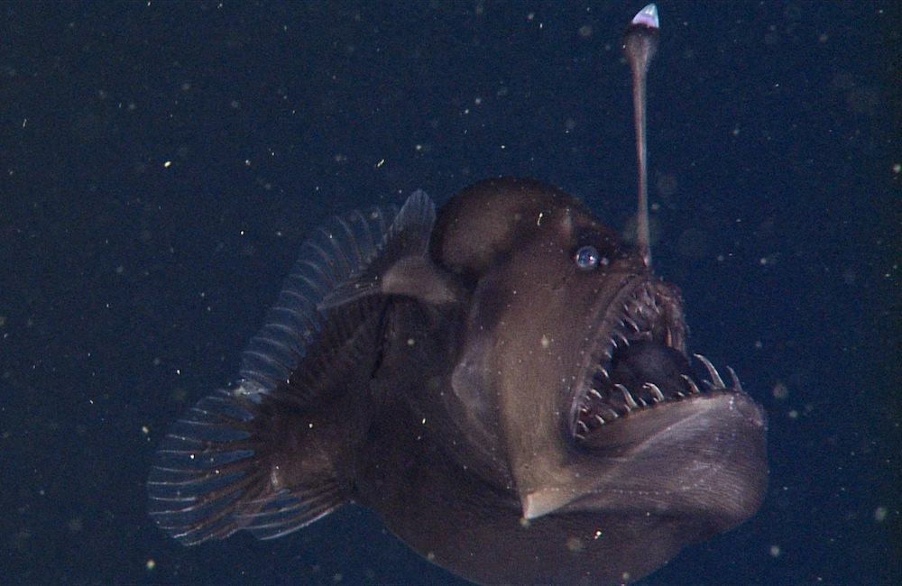

Tamboril
Lophius piscatorius

O apêndice em sua cabeça serve para atrair a presa com sua luz, assim como a isca
na ponta de uma vara de pesca, o que funciona muito bem devido à escuridão do fundo do mar.
Os tamboris machos são dependentes das fêmeas, eles são cerca de 6 vezes menores que elas, portanto
eles as mordem e se prendem como parasitas nelas e então, sobrevivem a base dos nutrientes na sua corrente sanguínea.
Home